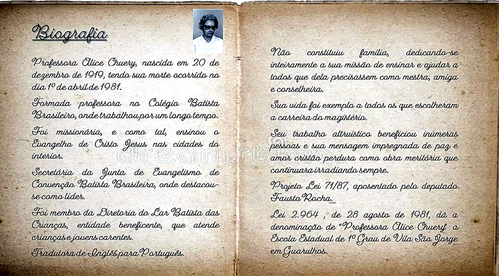

Nossa história
Professora Alice Chuery
A patrona da escola deixou uma trajetória marcada pela educação, dedicação ao próximo e compromisso com a formação humana.

Biografia
Uma vida dedicada ao ensino e ao serviço.
A Professora Alice Chuery nasceu em 20 de dezembro de 1919 e faleceu em 1º de abril de 1981. Formou-se professora no Colégio Batista Brasileiro, onde também trabalhou por um longo período.
Foi missionária e, como tal, ensinou o Evangelho de Cristo Jesus em cidades do interior. Também atuou como secretária da Junta de Evangelismo da Convenção Batista Brasileira, destacando-se como líder.
Atuação social
Alice Chuery foi membro da Diretoria do Lar Batista das Crianças, entidade beneficente voltada ao atendimento de crianças e jovens carentes. Também atuou como tradutora de Inglês para Português.
Legado
Não constituiu família, dedicando-se inteiramente à sua missão de ensinar e ajudar todos que dela precisassem, como mestra, amiga e conselheira.
Nome da escola
A Lei nº 2.964, de 28 de agosto de 1981, deu a denominação de “Professora Alice Chuery” à Escola Estadual de 1º Grau de Vila São Jorge, em Guarulhos.
Sua vida foi exemplo a todos os que escolheram a carreira do magistério. Seu trabalho altruístico beneficiou inúmeras pessoas, e sua mensagem de paz e amor cristão permanece como obra meritória.
Voltar para a apresentação